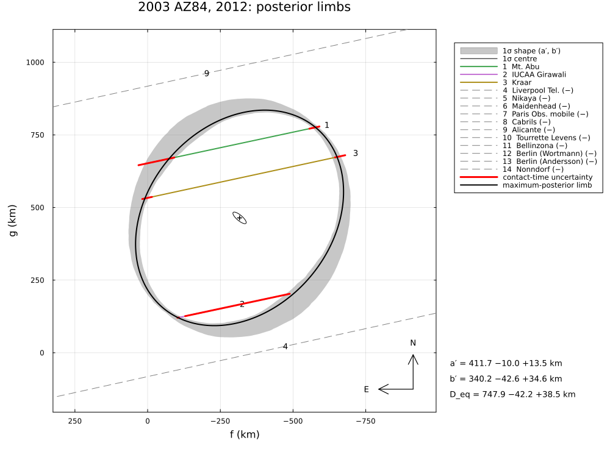
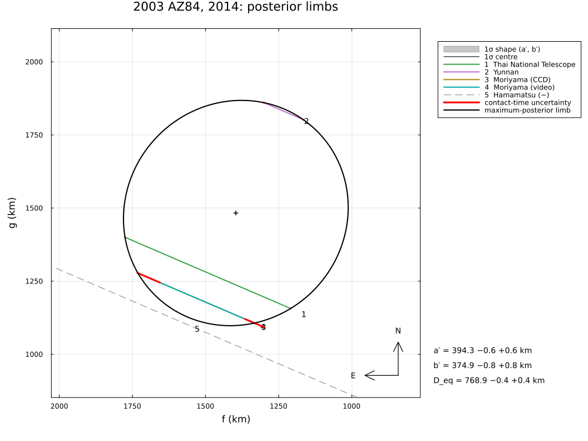
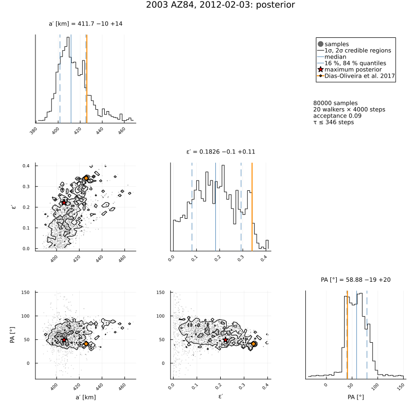
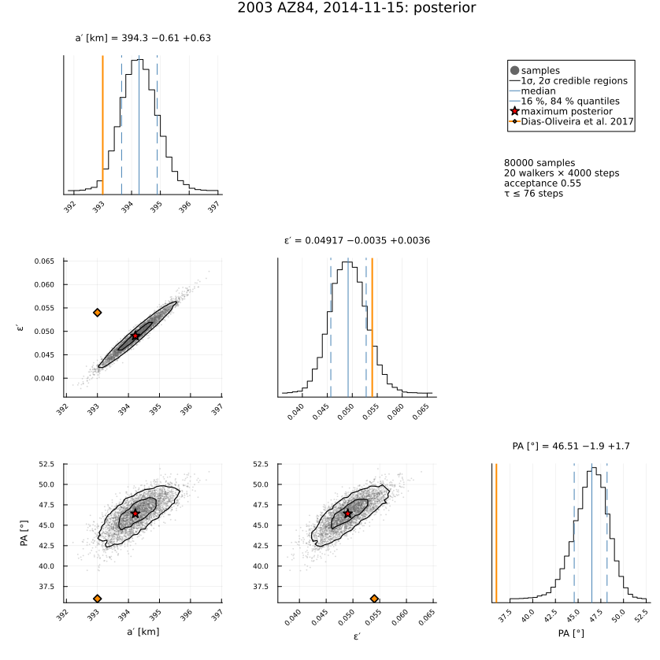

2003 AZ84, 2011–2014
Two multi-chord stellar occultations by the plutino (208996) 2003 AZ84, reduced from the published timings of Dias-Oliveira et al. (2017), AJ 154, 22, "Study of the Plutino Object (208996) 2003 AZ84 from Stellar Occultations: Size, Shape, and Topographic Features": three positive chords in India and Israel on 2012 February 3 (25 km/s) and three in Thailand, China and Japan on 2014 November 15 (9.4 km/s), with negative chords; and the two single-chord events of 2011 January 8 (Chile) and 2013 December 2 (Australia), whose stars the paper does not identify (they are identified in Gaia DR3 here).
Each event has three chords, six contacts for the five parameters of an ellipse: one degree of freedom. The example covers:
- the two ellipses and their posteriors, which show what three chords can and cannot determine (the paper quotes errors from one-dimensional χ² cuts);
- the change of the apparent oblateness between 2012 and 2014;
- the astrometry, compared with the corrected positions of the paper (both use the same star positions): 2014 agrees to 2 mas, 2012 differs in right ascension by twice the paper's RA offset, a sign error in the paper;
- the single-chord events: chord lengths, and the two astrometric positions each allows.
The data are transcribed in examples/data/2003az84_2012_2014.jl, with the stored JPL Horizons ephemerides, so the script runs offline:
julia --project=. examples/2003az84_2012_2014.jl [output_dir] (default: examples/output/2003az84_2012_2014)The code is not run when the manual is built. The output after each section is that of the last run of examples/2003az84_2012_2014.jl, stored in examples/output/2003az84_2012_2014/output.txt.
using Occultations, Random, Printf, Statistics
using Plots
import CairoMakie # saves the GeoMakie maps (Makie figures)
include(joinpath(@__DIR__, "standard_figures.jl"))
include(joinpath(@__DIR__, "data", "2003az84_2012_2014.jl"))
out = length(ARGS) >= 1 ? ARGS[1] : mkpath(joinpath(@__DIR__, "output", "2003az84_2012_2014"))
rng = MersenneTwister(2012)
P = AZ84_PAPER
pub(x) = length(x) == 3 && x[2] != x[3] ? @sprintf("%.3g −%.2g +%.2g", x...) : @sprintf("%.3g ± %.2g", x[1], x[2])
q(x) = quantile(x, [0.15865525393145707, 0.5, 0.8413447460685429])
pm(x) = (v = q(x); @sprintf("%.3g −%.2g +%.2g", v[2], v[2] - v[1], v[3] - v[2]))Events and geometry (paper values in parentheses)
evs = Dict(y => az84_event(y) for y in (2012, 2014))
for (y, v) in zip((2012, 2014), P.velocity)
e = evs[y]
@printf("%d: %d positive and %d negative chords; distance %.2f au, shadow velocity %.2f km/s (%.1f)\n", y,
count(ispositive, e.chords), count(isnegative, e.chords), e.ca.dist_km / 1.495978707e8, e.ca.vel, v)
end
fits = Dict{Int,Any}()
posts = Dict{Int,Any}()
for y in (2012, 2014)
section("$y: limb fit and posterior")
p = y == 2012 ? P.e2012 : P.e2014
e = evs[y]
r = fit_limb(e; rng=rng)
fits[y] = r
@printf("fit: χ² = %.2f for %d degree(s) of freedom\n", r.chi2, r.dof)
@printf(" a′ %7.1f ± %5.1f km (%s)\n", r[:equatorial_radius]..., pub(p.a))
@printf(" ε′ %7.3f ± %5.3f (%s)\n", r[:oblateness]..., pub(p.oblateness))
@printf(" PA %7.1f ± %5.1f° (%s)\n", mod(r[:position_angle][1], 180), r[:position_angle][2], pub(p.position_angle))
@printf(" R_eq %7.1f ± %5.1f km (%s)\n", r[:equivalent_radius]..., pub(p.R_equiv))
# the posterior: with one degree of freedom it is far from Gaussian
post = sample(r; nsteps=6000, rng=rng)
posts[y] = post
S = samples(post)
col(n) = S[:, findfirst(==(n), post.names)]
d = derived_samples(post; n=4000, rng=rng)
println("posterior (median and 68 % interval):")
@printf(" a′ %s km, ε′ %s, PA %s°, R_eq %s km\n", pm(col(:equatorial_radius)), pm(col(:oblateness)),
pm(mod.(col(:position_angle), 180)), pm(d.equivalent_radius))
for x in first(check_negative_chords(r), 2)
@printf(" closest negative chord: %-18s %s, %.0f km from the limb\n", x.chord, x.conflict ? "CROSSES" : "consistent",
x.distance)
end
end2012: 3 positive and 11 negative chords; distance 44.26 au, shadow velocity 24.82 km/s (25.0)
2014: 4 positive and 1 negative chords; distance 44.54 au, shadow velocity 9.41 km/s (9.4)The apparent oblateness changed between 2012 and 2014
ε12, ε14 = [samples(posts[y])[:, findfirst(==(:oblateness), posts[y].names)] for y in (2012, 2014)]
@printf("ε′ (2012) = %s, ε′ (2014) = %s; P(ε′2012 ≤ ε′2014) = %.3f\n", pm(ε12), pm(ε14),
mean(rand(rng, ε12, 20000) .<= rand(rng, ε14, 20000)))The paper reports the difference of ε′ as "more than 3σ" (errors from one-dimensional χ² cuts); with three chords per event the posteriors overlap: ε′(2012) ≤ ε′(2014) in about 10 % of the draws. A triaxial (Jacobi) body seen at different rotational phases changes its apparent ellipse; the paper derives a = 470 ± 20 km, b/a = 0.82, c/a = 0.52 with a rotation period of 6.75 h (or 13.5 h, double-peaked) and a density of 0.87 g cm⁻³. Two events of three chords do not constrain a 3-D fit with a free pole here.
ε′ (2012) = 0.183 −0.1 +0.11, ε′ (2014) = 0.0492 −0.0035 +0.0036; P(ε′2012 ≤ ε′2014) = 0.083The single-chord events of 2011 and 2013
The paper uses the two single chords only as lower limits for the major axis. Their stars are identified here in Gaia DR3 (the only sources within 5″ of the predicted position). A single chord fixes the centre for a given shape up to a mirror ambiguity: with a circle of the 2014 area-equivalent radius, the centre lies on either side of the chord. The two astrometric positions differ mainly across the chord; their errors contain only the timings, not the unknown shape at that rotational phase.
Req = fits[2014][:equivalent_radius][1]
for (y, (L, σL)) in zip((2011, 2013), P.single_chords_km)
e = az84_event(y)
c = e.chords[1]
f, g = chord_path(e, c; segment=:occulted)
Lc = hypot(f[end] - f[1], g[end] - g[1])
@printf("%s, %s (%s): shadow velocity %.2f km/s, chord %.1f km (%.0f ± %.0f); 2a′ of 2012/2014: %.0f/%.0f km\n",
e.name, c.name, e.star.name, e.ca.vel, Lc, L, σL, 2fits[2012][:equatorial_radius][1],
2fits[2014][:equatorial_radius][1])
# the two centres for a circle of radius Req, on either side of the chord
u = ((f[end] - f[1]) / Lc, (g[end] - g[1]) / Lc)
d = sqrt(Req^2 - (Lc / 2)^2)
for s in (1, -1)
cf, cg = (f[1] + f[end]) / 2 - s * d * u[2], (g[1] + g[end]) / 2 + s * d * u[1]
r = fit_limb(e; model=CircleLimb(), fix=[:radius], init=Dict(:radius => Req, :center_f => cf, :center_g => cg),
rng=rng)
a = astrometry(r)
@printf(" centre (f, g) = (%5.0f, %5.0f) km: RA %s Dec %s at %s UTC (σ %.1f, %.1f mas); offset from JPL Horizons Δα cos δ = %+.1f, Δδ = %+.1f mas\n",
r[:center_f][1], r[:center_g][1], a.ra_str, a.dec_str, isot(a.epoch; digits=1), a.ra_err, a.dec_err, a.offset_ra, a.offset_dec)
end
endThe identified stars reproduce the paper's shadow velocities (26 and about 17 km/s) and chord lengths, which confirms them. Both chords are shorter than the major axes of 2012 and 2014.
2003 AZ84, 2011-01-08, San Pedro de Atacama (SPACE) (Gaia DR3 3151679712277335168): shadow velocity 26.00 km/s, chord 572.8 km (573 ± 21); 2a′ of 2012/2014: 825/789 km
centre (f, g) = ( -199, 70) km: RA 07 43 41.82564 Dec +11 30 23.4734 at 2011-01-08T06:31:43.0 UTC (σ 1.1, 0.9 mas); offset from JPL Horizons Δα cos δ = -6.2, Δδ = +2.2 mas
centre (f, g) = ( -260, -439) km: RA 07 43 41.82551 Dec +11 30 23.4576 at 2011-01-08T06:31:43.0 UTC (σ 1.1, 0.9 mas); offset from JPL Horizons Δα cos δ = -8.1, Δδ = -13.7 mas
2003 AZ84, 2013-12-02, Rockhampton (Gaia DR3 3147373651082806272): shadow velocity 16.51 km/s, chord 669.7 km (657 ± 35); 2a′ of 2012/2014: 825/789 km
centre (f, g) = ( 548, -441) km: RA 07 58 56.73037 Dec +10 19 04.8934 at 2013-12-02T14:49:00.4 UTC (σ 0.9, 0.9 mas); offset from JPL Horizons Δα cos δ = +17.0, Δδ = -13.7 mas
centre (f, g) = ( 578, -818) km: RA 07 58 56.73043 Dec +10 19 04.8817 at 2013-12-02T14:49:00.4 UTC (σ 0.9, 0.9 mas); offset from JPL Horizons Δα cos δ = +18.0, Δδ = -25.4 masAstrometry (the paper's corrected positions, same star positions)
Both reductions use the same star positions, so the body positions can be compared directly. In 2014 they agree to about 2 mas. In 2012 the declination agrees, but the right ascension differs by −425 mas – twice the paper's RA offset of the centre (fc = 6800 km = 212 mas at 44.3 au): the paper's corrected position is the NIMA position plus fc, the fit here puts the body at the NIMA position minus f_c. This points to a sign error in the paper's 2012 RA offset.
for (y, p) in ((2012, P.e2012), (2014, P.e2014))
r = fits[y]
t = Epoch(p.position.epoch)
ra_, dec_, _ = ephem_radec(evs[y].body, t)
a = astrometry(r)
r_, d_ = Occultations.offset_radec(ra_, dec_, a.offset_ra, a.offset_dec)
@printf("%d, %s UTC: RA %s Dec %s (σ %.1f, %.1f mas)\n", y, p.position.epoch, format_ra(r_; digits=5),
format_dec(d_; digits=4), a.ra_err, a.dec_err)
@printf(" published: RA %s Dec %s\n", p.position.ra, p.position.dec)
@printf(" difference: Δα cos δ = %+.1f mas, Δδ = %+.1f mas\n",
(r_ - parse_ra(p.position.ra)) * cosd(d_) * 3.6e6, (d_ - parse_dec(p.position.dec)) * 3.6e6)
end2012, 2012-02-03T19:45:00 UTC: RA 07 45 54.77622 Dec +11 12 43.1304 (σ 22.0, 23.0 mas)
published: RA 07 45 54.80510 Dec +11 12 43.1310
difference: Δα cos δ = -424.9 mas, Δδ = -0.6 mas
2014, 2014-11-15T17:55:00 UTC: RA 08 03 51.29099 Dec +09 57 18.8062 (σ 22.0, 23.0 mas)
published: RA 08 03 51.29112 Dec +09 57 18.8060
difference: Δα cos δ = -1.9 mas, Δδ = +0.2 masFigures
for y in (2012, 2014)
savefig(plot(posts[y]; title="2003 AZ84, $y: posterior limbs", size=(1000, 750)), joinpath(out, "2003az84_$(y)_posterior.png"))
p = y == 2012 ? P.e2012 : P.e2014
savefig(cornerplot(posts[y]; vars=[:equatorial_radius, :oblateness, :position_angle],
axislabels=Dict(:equatorial_radius => "a′ [km]", :oblateness => "ε′", :position_angle => "PA [°]"),
truths=Dict(:equatorial_radius => p.a[1], :oblateness => p.oblateness[1],
:position_angle => p.position_angle[1]), truth_label="Dias-Oliveira et al. 2017"),
joinpath(out, "2003az84_$(y)_corner.png"))
end
# the standard figures of the 2014 event: limb fits, posterior, maps and the globe
standard_figures("2003az84", fits[2014]; out=out, posterior=posts[2014],
projection="+proj=laea +lon_0=118 +lat_0=28", limits=(90, 150, 10, 45), window=600, marks=60)
println("figures written to ", out)The posterior limbs of the two events, with three chords each:


The posteriors of the 2012 and 2014 ellipses, with the published values:

